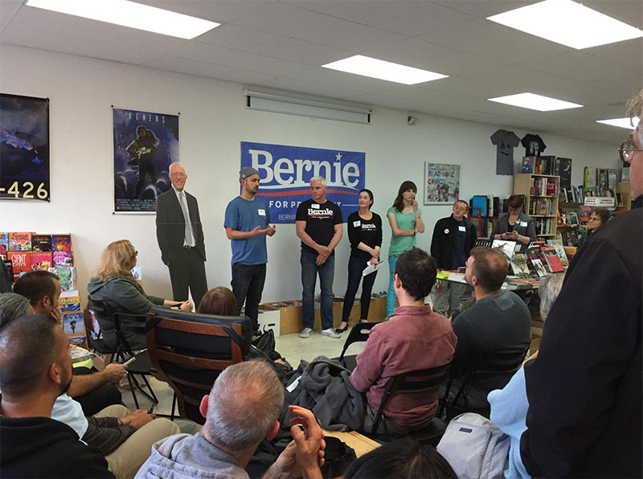
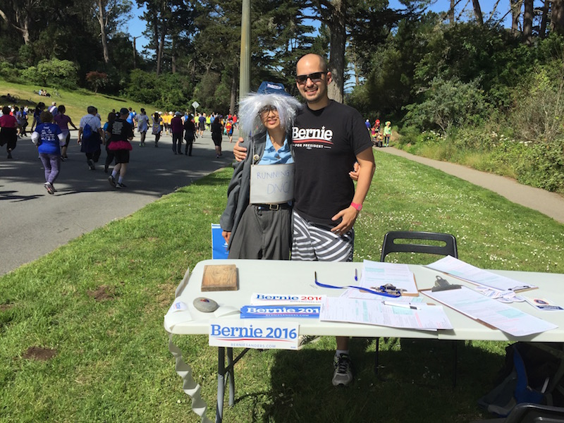
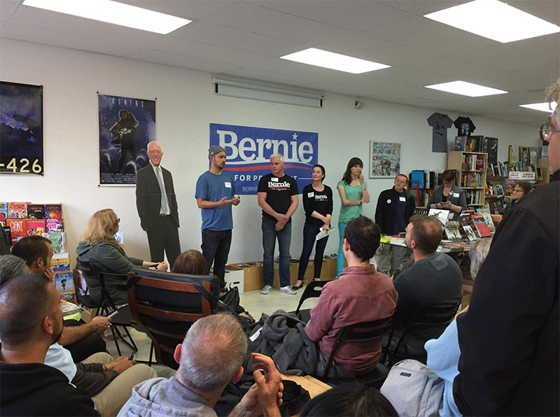
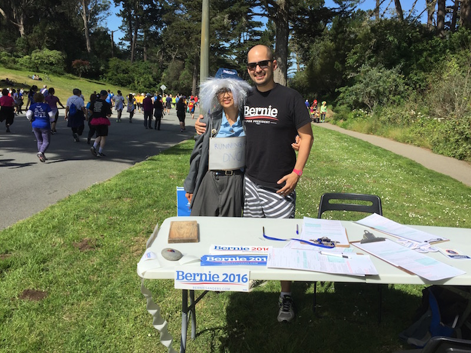
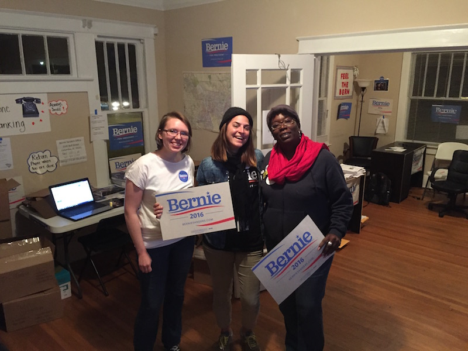
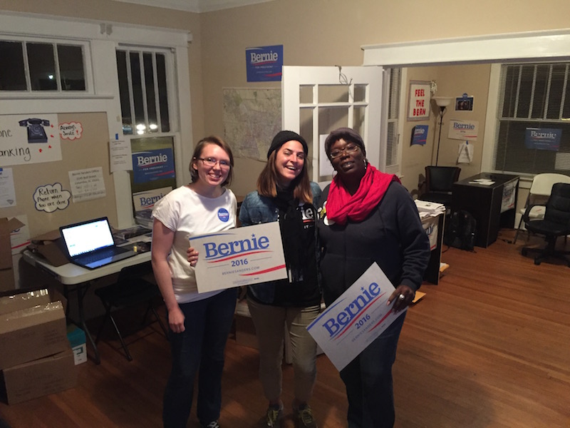

We are so happy and so excited to celebrate our love and committment to each other surrounded by our family and friends.
We met in New York City in late 2012 where we worked in the same office building in Soho called WeWork, a five-story converted factory that housed aspiring artists, designers, architects, tech startups, fashionistas – and everyone's dog – in glass-walled offices.
Our story goes...

Erica was in a small L-shaped office on the fourth floor, and Greg on the fifth floor almost directly above her. Greg thinks she got to know his stomping before she actually met him. They passed each other several times in the hallways until one day she found him in the lounge drinking mate, the Argentine tea, with a friend. They started to chat, introduced themselves, and found that despite her Brazilian-ness and his love of Argentine culture, they were to get along quite well. After a bit of light teasing, they both forgave each other for their cultural affinities and went their separate ways.
A few months later, on February 19, Erica ran into Greg outside the building. They started chatting and she quickly realized how easy and comfortable it was to talk more in depth with him. She tagged along on his on his afternoon coffee + cannoli break and when he came out with his Italian treats in hand, she popped the big question: Would he, Greg, accompany her to see the Brooklyn Nets at Barclay's Stadium that evening? Of course Greg said yes. Even though Erica insists it just started out as a friendly invite to see a basketball game, Greg insists that this was their official first date. With butterflies in her stomach, they met up to take the train to Brooklyn together.
The game was fantastic. With great seats a few rows back from the court and seeing Jimmy Fallon there, the Nets won in a close, last-minute run that had them on their feet and cheering until the final second. Erica impressed Greg with her loud whisteling skills so much so that he told his parents about it later.
After leaving the stadium, Greg casually mentioned how the weather was nice enough to walk back to Manhattan, and Erica asked, well, why not? And so they walked across Manhattan Bridge at 11pm in the middle of February. This is the first photo she took of Greg.

At some point, Erica wanted to snap a picture of the NY skyline by climbing a scaffold but Greg instisted that she not climb up so she took this photo from the walkway instead.

From then on, they were inseparable. They started hanging out more and more, doing lots of fun things and enjoying the springtime in NYC.
Erica got Greg into longboarding in the city.


He got her into noodles.
She got him into electronic music.
He got her into classical.
She got him to be more assertive.
He got her to be more practical.
He got her into pantsing and she pretty much pantsed him every day from then on out.
Pretty soon, they had their favorite restaurants, cafes, craft-beer bars and established a Friday night date night where they would explore different restaurants and music NYC had to offer.
Soon they met each other’s families and eventually moved in together. In June 2014, they decided to move to San Francisco so Greg could pursue his career in web development while Erica made plans to go back to school for Graphic Design.


In late October 2015, they took a weekend trip to Portland, Oregon. Little did Erica know, Greg was about to pop the big question. While hiking in Forest Park, in Portland, he tapped her shoulder and quickly asked, “Will you marry me?” extending the ring box to her. Erica, surprised, asked him if he was joking before she said yes!

Since then, they've been volunteering all their free time on the Bernie Sanders campaign. During the past year, they've traveled to Nevada, South Carolina, Georgia, Utah and Wisconsin canvassing and talking to voters.They both also became Neighborhood Team Captains in the Sunset District when the campaign was in California. PS. We painted that huge blue banner that was hung at a small rally in San Francisco.

  
   

This experience has opened our hearts and minds to be more active in our communities, to be more aware of local and national politics and to strive to make a difference in the world.
In the future, you might see us working on different campaigns, taking part in more movements, and working to make a difference in our communities and the world.
In the meantime, we're ready to say our "I do's" and hope you will be there to celebrate this exciting moment in our lives.